研究紹介Research
Last updated Feb. 28, 2024.
コウモリ班 Bat Team
ヒト・ネズミ班 Human / Gerbil Team
神経行動コラボ班 Neuroethology Collaboration Team
コウモリ班 Bat Team
野外班 －野外におけるコウモリの音響ナビゲーション戦略を解明しよう！－
自然環境下である野外では，実験室内では決して見ることができないコウモリのダイナミックな飛行と超音波利用を垣間見ることができます． 野生のコウモリが生きるために行う賢い戦略に学び，その際の音響ナビゲーションのアルゴリズムを解明するために，野外では主に三つの実験を行っています． 最適採餌に関する研究では，獲物捕食効率を最適にしようと振舞うという理論（最適採餌理論）の視点から，餌場における効率的な飛行ルート選択と音響センシングについて，またコウモリ同士の協調的な振る舞いについても研究を行っています． 群行動に関する研究では，大群となって飛行するコウモリが限られた空間をどのようにシェアしながらぶつからずに採餌を行っているのか，そのための超音波利用と飛行制御のメカニズムに迫ります． 大規模ナビゲーションに関する研究では，コウモリが大規模空間にて何を手がかりにして移動し，そしてどのように餌場を探すのか，バイオロギングと呼ばれる手法を用いて調べています． これらの野外実験で得られた仮説を，数理モデルを用いて検証し，その合理性の評価も行うことで，効果的なコウモリ・アルゴリズムとして工学分野へ応用することを目指しています．
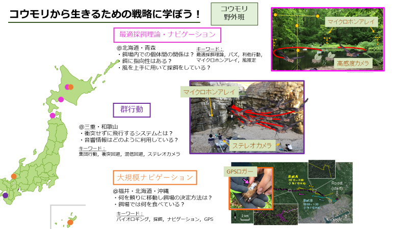
室内班
私たちの研究グループでは，観測室内でのコウモリの行動の計測を通して，コウモリのセンシング戦略の解明を目指しています．
－音でどう“見て”いるのか－
コウモリのエコーロケーションに関しては，物体の定位に関する能力の高さやその戦略が盛んに研究されてきました． しかし，コウモリは物体の位置にとどまらず，その物体の形状や質感，動きといったより高度で多次元な情報も取得していると考えられます． そこで，これらの情報を取得するためにエコーのどのような音響特徴に注目してセンシングを行なっているのかの解明に取り組んでいます． 具体的には，コウモリの放射パルスをマイクロホンで取得したのち，リアルタイムに音響特徴を操作してスピーカーからプレイバック再生することで仮想的な物体をコウモリに呈示します． このとき加えた音響操作とコウモリの応答から，コウモリの知覚アルゴリズムを紐解くことができるのです． これまでの研究では，例えば接近物体の知覚に関しては物体までの距離を符号化するエコー遅延の時間変化ではなく，速度を符号化するドップラーシフトから検知していることを明らかにしました． これからはオペラント条件付けとリアルタイムプレイバックを組み合わせて，物体の形状認識方法なども明らかにしていきたいと考えています．
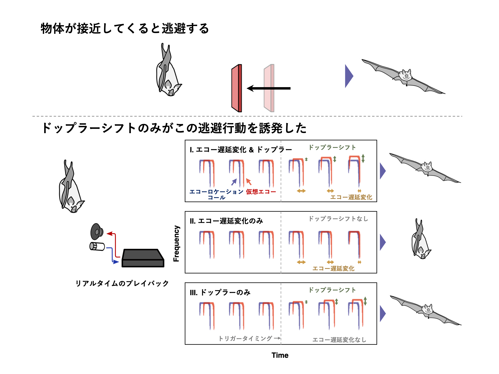
－コウモリの集団飛行時のセンシング戦略の解明－
コウモリは超音波を発し，その反響音（エコー）を聞くことにより，周囲環境を把握して飛行しています． コウモリが発する超音波は種ごとに似通っているにもかかわらず，洞窟などの狭くて暗い空間においても衝突することなく飛行を実現させています． たくさんのコウモリが飛行する環境（＝音響的な混信環境）から，どのようにして自身に必要な音のみを聞き分けているのか… 私たちのグループはコウモリが持つ優れた超音波信号の分離・聴取能力に着目し，時間長や周波数などの音響面から検討をしています． コウモリの混信回避能力を検討するための行動実験として，2種類の観点から研究を進めています． （１）観測室内で複数のコウモリを同時に飛行させ，個々のコウモリが発する超音波を音響面から検討を行う． （２）観測室内にスピーカを設置し，コウモリの超音波に似た音の再生環境下で飛行させ，コウモリが発する超音波の音響面の検討を行う． 独自に開発した小型ワイヤレスマイクロフォンと音響ロガーの２つを用いて，コウモリが実際に放射，また聴取している音をリアルタイムで録音できるような実験系を構築し，検討を進めています． これらの実験を並行して行うことで，混信に強い信号・ 受信技術等，コウモリの持つ優れた混信回避能力を解明し，通信やロボットの群制御の面等，工学分野での新たな知見を得ることを目指しています．
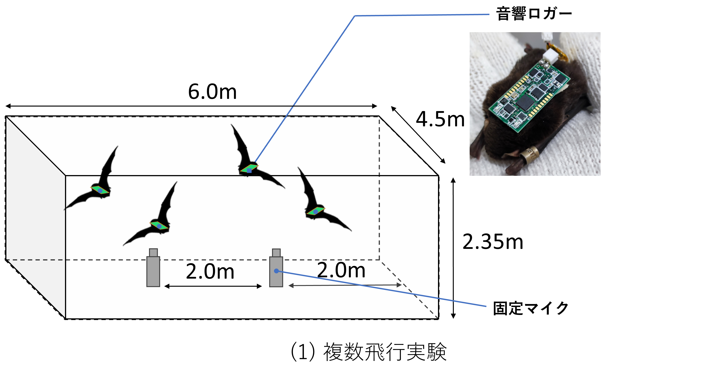
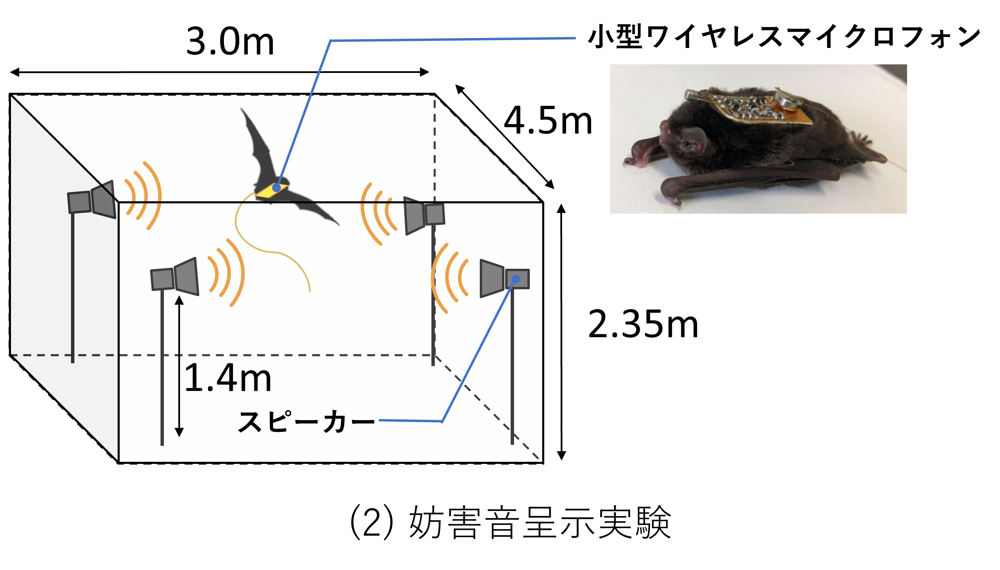
－コウモリ×AIで解き明かす空飛ぶスーパーコンピュータ－
コウモリは豆粒ほどの小さな脳で存在，距離，方向，性質などの標的情報をエコーから瞬時に抽出しています． この高性能な環境情報収集システムと，リンクするナビゲーション戦略が内蔵された“空飛ぶスーパーコンピュータ”を解き明かすために，私たちのチームでは“AI”を応用して“コウモリ脳”を開発しています． 具体的には，まずAIが学習するたくさんのデータを行動実験によって入手します． 学習パラメータはマイクロフォンで録音したパルスの音響特徴や，モーションキャプチャーでトラッキングした飛行軌跡といったコウモリの行動と，その行動を行ったときの環境状態です． そして，これらのパラメータを学習したAIをサイバー空間でシミュレーションすることで，コウモリの行動を予測したり，環境との相互作用から生じる行動ルールをモデル化することができます． コウモリ×AI＝コウモリ脳で行動決定までのプロセスを探求します．
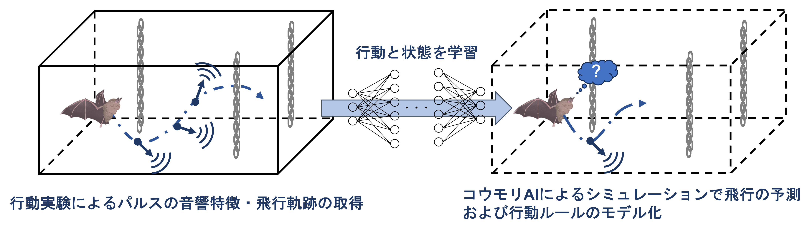
ヒューマンエコーロケーション班 －“音で世界を見る”に迫る－
コウモリのエコーロケーションに関する研究は進んでおり、目的や状況に応じて、柔軟に超音波の音響特性を変化させていることがわかってきています。 一部の視覚障害者も、コウモリのように超音波ではないものの、自身の発する舌打ち音を用いたエコーロケーションを行うことで周囲の環境を把握しており、エコーを聴収した際に視覚野の一部が賦活することが明らかになっています。 しかし、コウモリや一部の視覚障害者がエコーロケーションを用いてどのような世界を“音で見ている”のかについて、未だ謎が多くあります。 そこで、“音で世界を見る”感覚知覚を理解するために、ヒトを対象に研究を行っています。 私たちのグループは、晴眼なエコーロケーション未経験者でもトレーニングにより、空間把握スキルが向上されることから、晴眼なエコーロケーション未経験者を対象に効果的なエコーロケーションのトレーニング方法や学習過程の検討がされてきました。 近年、音の伝搬が可視化可能な音響シミュレーション＋視線追跡の情報をリアルタイムに定量化できるアイトラッカーを用いて形状推定が可能なシステムを導入してきました。 現在は、ヒトの頭の形状を模擬したMiniature dummy head（MDH）内に送信器、受信器を装着し、リアルタイムでセンシング可能で、被験者が操作して、迷路環境でも障害物回避できるようなデバイスを開発・研究しています。 このデバイスにより、視覚障害者でも簡単なエコーロケーション学習できること、災害救助の場面でも活用できることを目指しています。
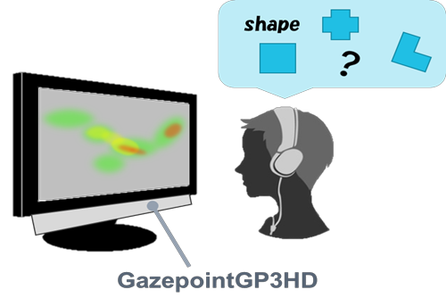 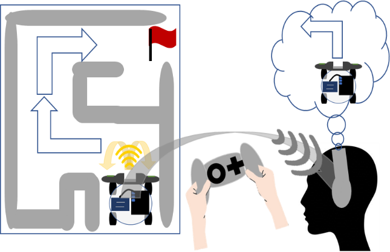
・全天球ステレオ技術による空間音響録音・配信技術
3次元の空間音響を手軽に計測し，簡便な方法で通信する手法を開発しています．
詳細はこちらのページをご覧ください．
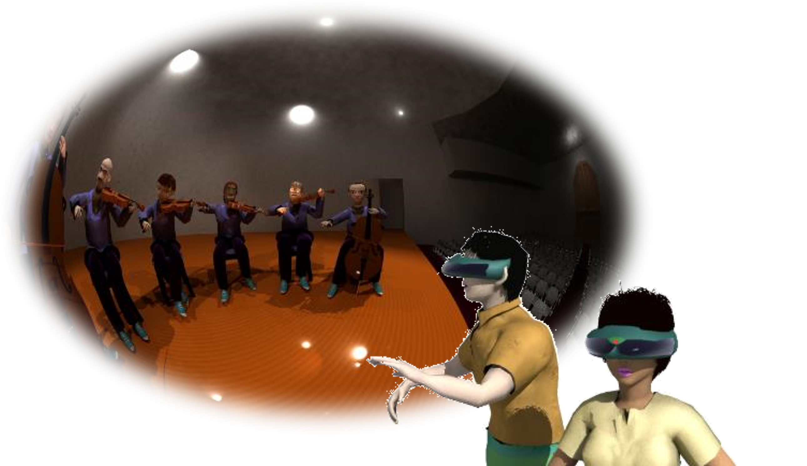
ロボット班 －コウモリのエコーロケーションをロボットに応用！－
・コウモリロボット
コウモリロボット
コウモリは“鼻または口”（1つの送信器）と“両耳”（2つの受信器）といった非常にシンプルな超音波センシングシステムと巧みなセンシングテクニックを用いることで，周囲空間を把握し，地形環境にも左右されずに柔軟で優雅な飛行を実現させています[1]． 私たちの研究チームでは，これまでのコウモリのエコーロケーション行動の実験で得た結果や発見から，彼らの超音波センシング運用を応用した“コウモリロボット”の開発に取り組んでいます． コウモリが放射する超音波構造を模擬できる高性能なセンサや，リアルタイムでの高速信号処理システム，また近年注目されている機械学習など，様々な新しい知識や技術を学び，ロボットに実装していきます． そして，“コウモリ独自のセンシングテクニックやアイデア”を搭載すると，どのような結果や効果が得られるのか？コウモリロボットを用いた評価・検証実験を通して，これまで発見できなかった彼らの巧みなセンシング戦略の真髄に迫ります[2]． コウモリのエコーロケーション行動を工学的に評価することができれば，少ないセンサ(1送信2受信器)で高精度な空間把握を実現できる新たなソナー技術の発展に繋がり，車の自動運転や自律飛行ドローンなどのセンシング技術に貢献できると考えています． コウモリの偉大さの発見と工学分野への応用を目指し，日々新たなロボットの開発・実験が推し進められています．(株式会社村田製作所，広島大学理学部と共同研究)
[1] Hase, K., "Bats enhance their call identities to solve the cocktail party problem." Communications Biology 1, 39, 2018.
[2] Yamada et al., "Ultrasound navigation based on minimal designed vehicle inspired by bio-sonar strategy of bats." Advance Robotics, in press.
・コウモリの行動を模擬したロボットの実験

コウモリ模倣センシングアルゴリズムの搭載
コウモリは障害物回避や混信回避など，環境やタスクに応じて独自のセンシング戦略を行っています． 私たちの研究チームでは，様々なコウモリ特有のセンシングテクニックやアイデアをロボットに搭載することで，その行動の有用性を評価しています． その結果，障害物との衝突回避や複数台での走行など，複雑な環境下におけるロバストなナビゲーションを実現しました． コウモリの超音波によるセンシング運用は，既存の工学ソナーの発想にはない彼ら独自のアイデアであり，工学的に検証を行うことで，新たなソナー技術に応用できると考えています．
ヒト・ネズミ班 Human / Gerbil Team
感覚統合班
－感覚統合とは...？－
私たちは視覚、聴覚、触覚などのさまざまな感覚を通じて日々生活をしていますが、その感覚情報処理の過程には異なる感覚間の情報の相互作用が存在します。
この現象は感覚統合と呼ばれています。
この働きにより、私たちは周りの世界を効率よく学習し適応するために役立つと考えられていますが、一方で現実の物理世界には存在しない錯覚を引き起こすことがあります。
（視聴覚統合現象によるダブルフラッシュ錯覚が有名です）
このような現象を引き起こす感覚統合現象に関して、私たちは自由にテーマを定めて研究を行っています。
－風を模した音刺激が触知覚に与える影響－
蚊が耳元を飛んでいるときの音を聴いて、耳元や首筋がぞわそわする経験をしたことがある方は多いのではないでしょうか？。
また、ヒトの頭部を模倣した特殊なマイクの耳を撫でた際の音を聴くと、与えられているものは音刺激だけにも関わらず、あたかも耳を触られたようなぞくぞく感が感じられると言われています。
（YouTubeなどのプラットフォームにおいて “ASMR” という名前のジャンルが知られています）
私たちはこの現象を、音刺激が触知覚に影響を与える「聴触覚統合現象」であると仮説を立て、そのメカニズムの解明を目指しています。
一般的に、感覚統合現象には、与えられた各感覚刺激の「時間一致性」と「空間一致性」が重要であると考えられています。
私たちは、日常的に耳で聴くと同時に、耳で感じている「風」を対象に研究を行っています。
ヒトを対象に心理実験を行い、
・ 耳に対して吹きかかる風を模倣した音は、風が吹かれた際の触知覚を誘発するのか、
・ また、各刺激モダリティ間にどのような量的な関係があるのか
を、検証しています。また、
・触知覚の誘発に関連のある音刺激の音響特徴は何であるのか
も、音響解析を行い調べています。
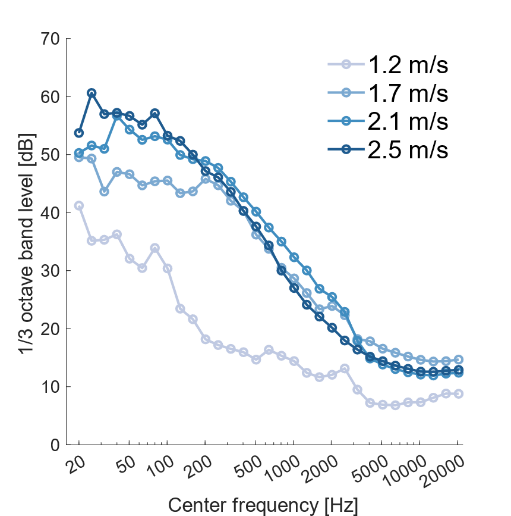・ 耳に対して吹きかかる風を模倣した音は、風が吹かれた際の触知覚を誘発するのか、
・ また、各刺激モダリティ間にどのような量的な関係があるのか
を、検証しています。また、
・触知覚の誘発に関連のある音刺激の音響特徴は何であるのか
も、音響解析を行い調べています。
神経生理班 －遺伝子から難聴メカニズムを紐解く－
難聴は注意力低下やコミュニケーション障がいを引き起こし、生活の質（QOL：Quality of life）の低下を招きます。 難聴は遺伝子やウイルス、ストレスや加齢など様々な要因が複雑に絡み合い発症することから、そのメカニズムの全貌は未だ明らかにされていません。
私たちの研究チームでは、医生命システム学科と共同研究を行い、神経系において主要な微小管関連遺伝子の１つ“MAP2”を欠損させた遺伝子ノックアウトマウスが難聴を引き起こすことを明らかにしてきました。 MAP2遺伝子の欠損による聴覚障がいに焦点を絞り、その原因究明から治療法探索まで広く研究を進めています。

音声コミュニケーション班
幼少期に過度なストレス(児童虐待など)を受けると，将来，精神疾患や社会的コミュニケーション障害の発症リスクが増加することが知られています。 しかしこれらの発症メカニズムは不明な点が多く，的確な治療法も確立されていません。 私たちはネズミの母子間(お母さん-子供)と成体間(大人-大人)コミュニケーションに着目し，”幼少期のストレスがコミュニケーションに及ぼす影響とその治療法の開発”と”コミュニケーションに大事な要素は何か”を明らかにする研究を行っています。
－社会的コミュニケーション障害のメカニズム解明と治療法の探求－
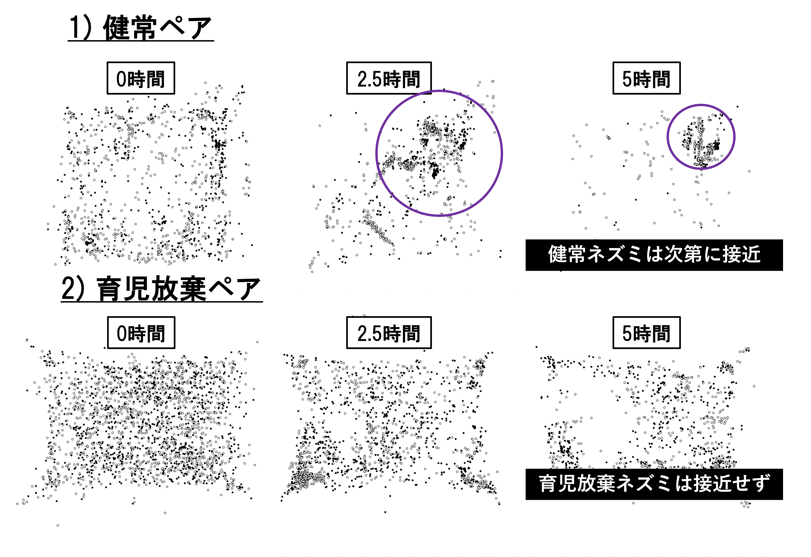 私たちは仔ネズミに育児放棄を模した操作を施すと，母子間コミュニケーションそして成長後の成体間コミュニケーションに影響を及ぼすことを明らかにしました。 更に，育児放棄を経験したネズミは健常なネズミとのコミュニケーションを繰り返すことで障害が改善される傾向が見られました。 これらの変化にはストレスや社会性を司るホルモンの関与を予想しています。 そこで，健常なネズミ(大人や子供)にこれらのホルモンを投与した際の行動変化や，活発に活動した脳領域を特定することで障害のメカニズム解明に取り組んでいます。
－母子間コミュニケーションのメカニズム解明－
スナネズミもヒトと同様に音声を用いた母子間コミュニケーションを取ります。 スナネズミの幼獣の音声の中で有名なものにIsolation callというものがあります。 これは幼獣が巣から孤立し、体温が低下した際に母親に助けを求める音声で、この音声は母親が幼獣を口で加えて巣に戻す母性行動（Retrieve behavior）を誘発させます。 私たちはこのIsolation callとRetrieve behaviorの関係から母性行動の誘発に重要な要因を解明できると考えています。
レーザー人工内耳班 －赤外光レーザーを用いた非侵襲人工内耳の開発－
現在、日本国内の高度難聴者は約36万人いると言われています。 高度難聴者の聴覚再建方法として人工内耳の装用が挙げられますが、人工内耳の装用は電極を蝸牛内に挿入する侵襲性の高い外科手術を必要とします。 そのため、多くの難聴者が人工内耳を気軽に装用できないことが問題となっています。 近年、赤外光を神経に照射することで活動電位が誘発されることが報告され、電気刺激に代わる新たな刺激法として注目を集めています。 電気刺激で神経を刺激する際には、電極を組織に接触させる必要がありますが、赤外光レーザー刺激は刺激用プローブである光ファイバーを組織に接触させることなく神経を刺激できます。 私達の班では、赤外光レーザー刺激の非接触性を人工内耳に応用することで、イヤホンのように気軽に装用可能な人工内耳の開発を目指しています。 スナネズミを対象とした研究で、赤外光レーザーの刺激パラメーターを調節することで、音知覚を制御できる可能性を示しました。 また、ヒトを対象とした心理実験により、赤外光レーザー人工内耳により少なくとも部分的に音声知覚を再現できることも分かりました。 今後もレーザー人工内耳の実用化に向けた研究を実施したいと考えています。 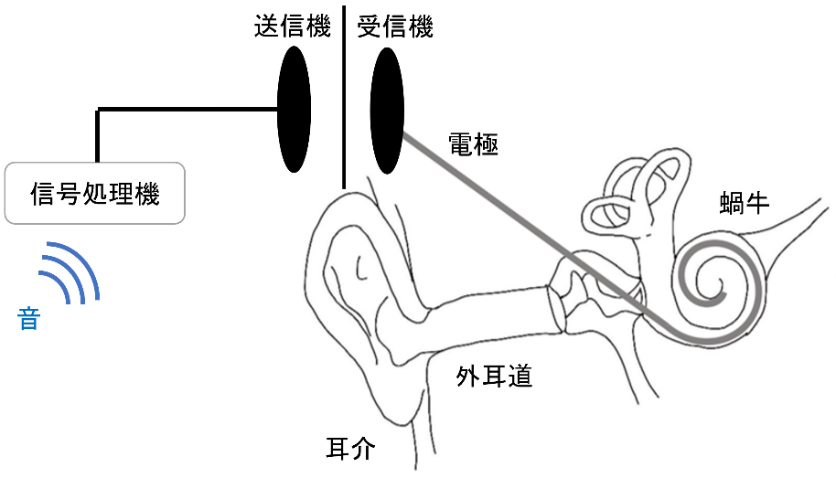
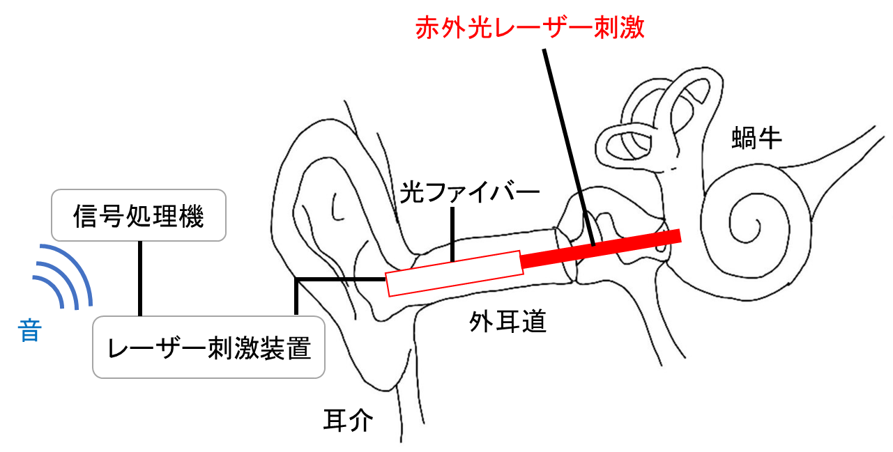
高次認知班
高次認知班は，音声知覚や自己感、情動などの認知機能に着目し，ヒトを対象とした様々な観点からその行動・神経メカニズムの解明を目指しています．
－自分の録音音声に違和感を抱くのはなぜ？－
私たちは話しているときの自分の声に対して何も感じないのに、録音された自分の声を聞くと違和感や不快感を覚えることが知られています。 というのも、発話中の声には空気の振動で伝わる「気導音」だけでなく、頭蓋骨などを通して聴覚器官へ伝わる「骨伝導音」が混ざって聞こえます。 一方で、録音音声には骨伝導音が含まれていません。 この音響的な違いが違和感を生み出していると一般的には考えられています。 しかし最近の研究では、自分の声だと気づかない状態で録音音声を聞くと、逆に魅力的に感じることが報告されており、音響的な違いだけが録音音声への違和感を生み出しているわけではない可能性があります。
そこで私たちの研究グループでは、録音音声の特徴量を操作した心理実験を行うことで、録音音声に対する違和感が生じるメカニズムの解明を試みています。 将来的には、脳波（EEG）やfMRIなどの脳機能イメージングを用いることで、その神経基盤まで明らかにすることを目指しています。 自身の録音音声に対する違和感のメカニズムの解明は、個々人の理想声生成に関する技術の開発やヒトのwell-beingの向上につながることが期待されます。
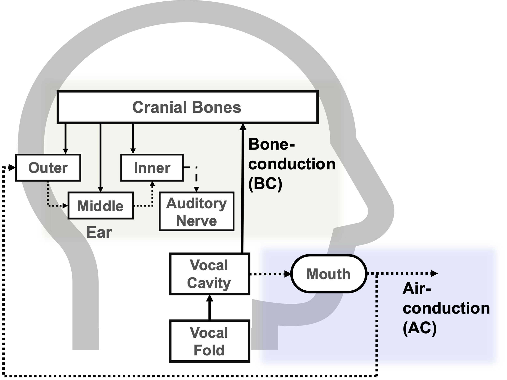
－聴覚予測処理における情動の役割－
脳は、変化しやすい環境を即座に知覚するために、過去の情報を基に予測していると考えられています。 こうした知覚の予測処理は、予測した結果と実際の外部情報の差分を用いて次の予測を更新することで、環境に対する適応的な知覚を可能にしています。 その一方で、知覚は情動などの内的状態によって調節されることが知られており、例えば情動の強さ（覚醒度）によって外界に対する注意が高まることが報告されています。
では、情動は知覚の予測処理に対してどのような影響を与えるのでしょうか？ 私たちの研究グループは、コミュニケーションに不可欠な聴覚の予測処理に着目し、心理実験やベイズモデリングなどのデータ解析、fMRIなどの脳機能イメージングを組み合わせることで、適応的なコミュニケーション伝達における情動の役割を明らかにしたいと考えています。
最終的には、状況に応じた音声コミュニケーションが得意でない人に対して、聴覚処理の観点から効果的な治療法の開発に貢献することを目指します。
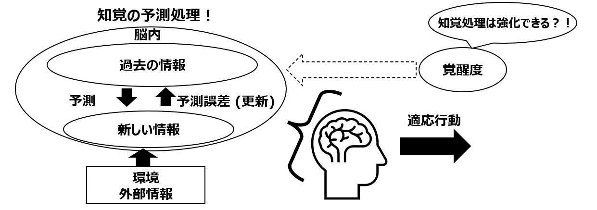
音象徴班
ある音韻や音節のような短い音声が特定の印象(大きさや形など)を想起させる現象を音象徴と言います (例えば「ボ」という音声と「ピ」という音声のそれぞれが大きさを表していると考えたとき、「ボ」より「ピ」の方が小さいように感じないでしょうか？)． このような音声と音声によって喚起させる印象との対応関係は，年齢や言葉や文化の違う多くの人々に共通して存在すると考えられています． 私たちは音象徴という現象が起きる仕組みや，音象徴と言語音声の学習・発達の関係について認知心理学的な側面から研究しています．
－幼児の音と意味の結びつきの発達－
私たちは幼児の音と意味の結びつきに注目しています。 ヒトの言語は乳幼児期の発達とともに獲得されていきます。 中でも、発達の速い段階で音と意味の結びつきを獲得していくと考えられます。 そこで、音と意味の結びつきの獲得過程を各年齢ごとに探ることにしました。 言語への触れ方など環境は人それぞれ違いますが、大きな視点で見た時の言語発達の解明に迫れるのではないかと考えています。
ヒトはさまざまな感覚からの情報を統合することで外界を知覚しています。 例えば、映画館で映画を見ている時を思い浮かべてみてください。 画面の中の演者やキャラクターの音声はその演者の口元ではなく左右や背後に設置されたスピーカから呈示されていますが、私たちはあたかも口元から聞こえてくるように感じます。 つまり、視覚からの情報と聴覚からの情報を結び付けているということになります。 幼児でも同様に、視覚情報と聴覚情報を結び付ける能力があると考えています。 そこで幼児の音から想起するイメージと視覚情報の結びつきを、物体命名を用いて行います。 幼児が興味を引くキャラクターのようなイラストを作成しそのイラストに当てはまる音声を選択してもらうことで物体命名を再現し実験を行います。
各年齢ごとの結果を元に幼児の言語発達を調査していきたいと考えています。
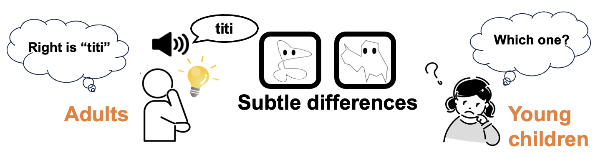
神経行動コラボ班 Neuroethology Collaboration Team
－コウモリの行動を彼らの内的状態に基づいて理解しよう－
この班は当研究室の二人の教員（飛龍教授および小林教授）の専門分野をコラボレーションした学際的な研究テーマです。 コウモリは周囲の状況や環境に応じて臨機応変にエコーロケーション戦術を変化させ，カメラやマイクによって観察可能な音響行動の分析から彼らのナビゲーション戦術を探る研究がこれまで行われてきました。 一方，生物の行動をつかさどる意思決定には，他の個体の干渉などによる外的要因のほか，過去の経験に基づく学習や生理的欲求，個性といった一般的には評価が難しい内的要因の影響も重要だと考えられています。 そこで，我々の研究チームはコウモリの適応的なナビゲーションを支える意思決定機構の理解を目指し，心電図や神経活動といった生体信号と行動・音声の同時計測を通して，彼らの内的状態にアプローチします。 コウモリは音声情報に強く依存した哺乳類であり，他の動物よりも少ない情報入力から行動を出力する意思決定機構を持っている点がモデル動物として適しています。 現在取り組んでいる研究テーマのひとつでは，コウモリが発するコミュニケーション音声が聞き手にどのような情報を伝え，聞き手の行動にどのような影響を与えるのかを調査しています。 例えば，コウモリが天敵に襲われている状況で発する音声（Distress call）を聴取させた場合，聞き手の心拍が上昇することが明らかになっており，恐怖反応を示す可能性があります[1]。 このようなアプローチにより，行動の過程を理解することで，コウモリの情動や共感性とその役割などを捉えられるようになる可能性があります。 本研究では優れた技術の模倣だけでなく，多種多様な生物が進化の過程で獲得してきた生存戦略の一端を解明することが期待されています。
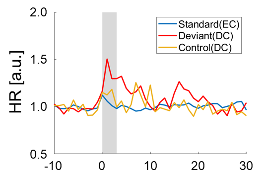 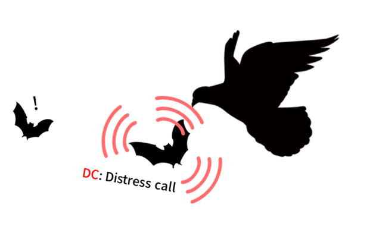
Distress call聴取時の心拍の変化の例（左），天敵に襲われてDistress callを発する状況のイメージ（右）
[1] Yoshino-Hashizawa, Kazuki, et al. "The distress context of social calls evokes a fear response in the bat Pipistrellus abramus." bioRxiv (2023): 2023-06.